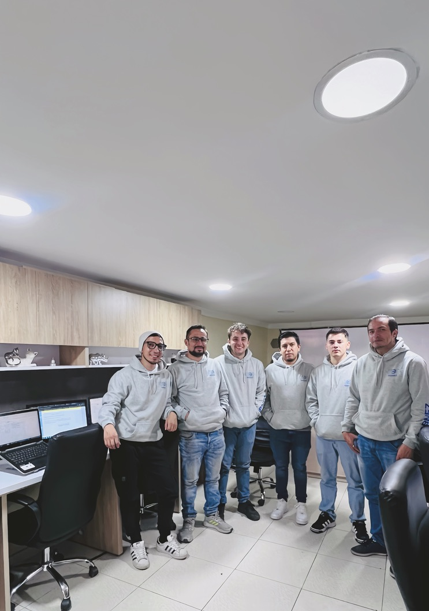

QUIENES SOMOS
En SABNEZ Consulting SAS, estamos inspirados por la innovación y el compromiso con la excelencia en el desarrollo ABAP. Desde nuestros inicios, hemos estado a la vanguardia de la tecnología, ayudando a empresas a optimizar sus sistemas SAP y a desbloquear todo su potencial.
Creemos en la colaboración estrecha con nuestros clientes. Nos sumergimos en sus desafíos empresariales, entendemos sus necesidades y ofrecemos soluciones a medida que no solo resuelven problemas, sino que también generan valor real y duradero.
Nuestro equipo de expertos en ABAP no solo domina el código; transforman los procesos empresariales, se comprometen con la eficiencia operativa y potenciar el crecimiento empresarial. Cada línea de código que escribimos está impulsada por la búsqueda incansable de soluciones innovadoras y eficaces que impulsen el éxito de nuestros clientes.
Lo que nos distingue no son solo nuestras habilidades técnicas excepcionales, sino también nuestra capacidad para comprender las complejidades de los procesos empresariales y traducirlas en soluciones prácticas y efectivas. Nos enorgullece ser más que un proveedor de servicios; somos un socio estratégico en el camino hacia la transformación digital.
Únete a nosotros y descubre cómo podemos llevar tu negocio al siguiente nivel con nuestro enfoque innovador en el desarrollo ABAP. Estamos aquí para ser tu guía en el emocionante viaje hacia el éxito tecnológico.
¡Gracias por considerar a SABNEZ Consulting SAS como tu socio de confianza en desarrollo ABAP!

VISION
En SABNEZ Consulting SAS visualizamos un futuro donde la excelencia en la programación ABAP es la norma, no la excepción. Nuestra visión es liderar la vanguardia del desarrollo de software empresarial, ofreciendo soluciones ABAP innovadoras y de clase mundial que impulsen la eficiencia, la productividad y el éxito de nuestros clientes en el entorno SAP.
Nos esforzamos por ser reconocidos como el socio de confianza para empresas de todos los tamaños que buscan maximizar el valor de sus inversiones en tecnología SAP. Con un enfoque centrado en el cliente y un compromiso inquebrantable con la calidad y la excelencia técnica, aspiramos a ser la referencia en el desarrollo ABAP, superando constantemente las expectativas y estableciendo nuevos estándares de rendimiento en la industria.
Nuestra visión va más allá de simplemente escribir líneas de código; se trata de empoderar a nuestros clientes para que alcancen su máximo potencial, desbloqueando nuevas oportunidades de crecimiento y competitividad en el mercado global. Con cada proyecto que emprendemos, nos acercamos un paso más a realizar nuestra visión de un mundo donde la programación ABAP es sinónimo de innovación, calidad y éxito empresarial.
MISION
Nuestra misión es proporcionar soluciones de programación personalizadas en SAP que impulsen la eficiencia, la innovación y el crecimiento de nuestros clientes, permitiéndoles alcanzar sus objetivos empresariales con éxito.
Nos comprometemos a ofrecer servicios de programación en SAP de alta calidad, centrados en las necesidades específicas de cada cliente, para optimizar sus procesos empresariales, mejorar la productividad y maximizar el retorno de la inversión en tecnología.
Buscamos ser líderes en la industria de la programación en SAP, ofreciendo soluciones innovadoras, confiables y a la medida que permitan a nuestros clientes adaptarse y prosperar en un entorno empresarial en constante cambio.
Nuestra misión es ser el socio de confianza de nuestros clientes en la implementación y optimización de sistemas SAP, brindando servicios de programación que garanticen la integración, la escalabilidad y el rendimiento óptimo de sus soluciones tecnológicas.
Trabajamos incansablemente para ofrecer soluciones de programación en SAP que sean ágiles, flexibles y adaptables, permitiendo a nuestros clientes responder de manera eficaz a las demandas del mercado y mantenerse a la vanguardia de la innovación tecnológica.
VALORES
Innovación: Promoción de la innovación continua en el desarrollo de soluciones SAP, adoptando nuevas tecnologías y metodologías para mejorar la productividad y la competitividad.
Integridad: Actuar con honestidad, transparencia y ética en todas las operaciones comerciales, manteniendo altos estándares de integridad profesional y personal.
Colaboración: Fomentar un entorno de trabajo colaborativo donde el trabajo en equipo y la comunicación abierta sean fundamentales para alcanzar los objetivos empresariales y satisfacer las necesidades de los clientes.
Responsabilidad social: Somos personas socialmente responsables, contribuyendo al bienestar de la comunidad y promoviendo entornos en los que los jóvenes puedan descubrir y desarrollar todos sus potenciales en el ámbito tecnológico .
Servicios
1. Servicios de consultoría SAP:
• Configuración y personalización de módulos SAP según los requisitos del cliente.
2. Desarrollo y personalización:
• Desarrollo de soluciones SAP personalizadas para abordar necesidades específicas del cliente.
• Integración de sistemas SAP con otras aplicaciones empresariales.
• Desarrollo de interfaces de usuario personalizadas y aplicaciones complementarias.
3. Soporte y mantenimiento:
• Mantenimiento continuo de sistemas SAP, incluida la resolución de problemas y la aplicación de parches y actualizaciones.
• Soporte técnico para usuarios finales y administradores de sistemas SAP.
4. Optimización y mejoras:
• Análisis de procesos empresariales y recomendaciones para optimizar la configuración de SAP.
• Actualización y modernización de sistemas SAP existentes.
• Implementación de prácticas recomendadas para mejorar el rendimiento y la eficiencia del sistema.
5. Servicios especializados:
• Implementación de soluciones de movilidad empresarial para acceder a sistemas SAP desde dispositivos móviles.
Tecnologías
ABAP (Advanced Business Application Programming): ABAP es el lenguaje de programación principal utilizado para el desarrollo y personalización de aplicaciones dentro del entorno SAP. Se utiliza para crear programas de negocios, informes, interfaces y funciones de usuario en sistemas SAP.
SAPUI5: SAPUI5 es un framework de desarrollo de aplicaciones web basado en JavaScript y HTML5. Se utiliza para crear interfaces de usuario modernas y receptivas para aplicaciones web dentro de SAP.
SAP HANA SQLScript: SAP HANA es una plataforma de bases de datos en memoria desarrollada por SAP. SQLScript es un lenguaje de programación utilizado específicamente para escribir procedimientos almacenados y funciones en SAP HANA.
SAP Fiori: SAP Fiori es una colección de aplicaciones y estándares de diseño centrados en el usuario que se utilizan para crear experiencias de usuario intuitivas y móviles en los sistemas SAP. Se basa en tecnologías como SAPUI5 y SAP Gateway.
Java: SAP también admite el desarrollo en Java para la creación de aplicaciones empresariales y servicios dentro de su plataforma. Java se utiliza para integrar sistemas externos con SAP, desarrollar aplicaciones móviles y crear servicios web.
JavaScript: Además de SAPUI5, JavaScript se utiliza ampliamente en la personalización y extensión de sistemas SAP, especialmente para desarrollar interfaces de usuario y aplicaciones web.
XML (Extensible Markup Language): XML se utiliza en SAP para el intercambio de datos entre sistemas, configuración de interfaces y personalización de aplicaciones.
BAPI (Business Application Programming Interface): BAPI es una interfaz de programación estándar proporcionada por SAP para permitir la integración de aplicaciones externas con sistemas SAP. Se utiliza para desarrollar integraciones personalizadas y extender la funcionalidad estándar de SAP.
IDoc (Intermediate Document): IDoc es un formato estándar de SAP para el intercambio de datos entre sistemas SAP y sistemas externos. Se utiliza para la integración de sistemas empresariales y la transferencia de datos entre aplicaciones.
RFC (Remote Function Call): RFC es un mecanismo utilizado en SAP para permitir la comunicación entre sistemas SAP y sistemas externos a través de llamadas de función remota. Se utiliza para la integración de sistemas y la ejecución de funciones en sistemas SAP desde aplicaciones externas.
Web Services: SAP admite la creación y consumo de servicios web estándar basados en tecnologías como SOAP (Simple Object Access Protocol) y REST (Representational State Transfer). Estos servicios se utilizan para la integración de sistemas y la exposición de funcionalidades de SAP a aplicaciones externas.
OData (Open Data Protocol): OData es un protocolo de comunicación estándar basado en HTTP utilizado para la exposición de datos a través de servicios web. SAP utiliza OData para la integración de sistemas y el acceso a datos desde aplicaciones externas, incluidas las aplicaciones móviles.
SAP Gateway: SAP Gateway es una tecnología que permite la exposición de datos y funcionalidades de sistemas SAP a través de servicios web basados en estándares como OData. Se utiliza para crear interfaces de programación de aplicaciones (API) para acceder a sistemas SAP desde aplicaciones externas.
SAP Cloud Platform: La plataforma en la nube de SAP ofrece un conjunto de servicios y herramientas para el desarrollo, la integración y la extensión de aplicaciones empresariales. Se utilizan varios lenguajes y tecnologías en la SAP Cloud Platform, incluidos Java, Node.js, Python, y más.
SAP NetWeaver: Es una plataforma de integración y desarrollo de aplicaciones que proporciona un entorno para el desarrollo de aplicaciones empresariales, integración de sistemas y gestión de procesos de negocio en entornos SAP.
SAP ABAP Managed Database Procedures (AMDP): Es una característica de SAP HANA que permite a los desarrolladores escribir procedimientos de base de datos en ABAP que se ejecutan en la base de datos SAP HANA para mejorar el rendimiento y la eficiencia de las operaciones.
SAP Cloud Application Programming Model (CAP): Es un modelo de programación que simplifica el desarrollo de aplicaciones empresariales en la nube de SAP, proporcionando un conjunto de herramientas y mejores prácticas para el desarrollo de aplicaciones basadas en servicios y datos.
RESPONSABILIDAD SOCIAL
En SABNEZ Consulting SAS queremos fortalecer todas las habilidades que estamos seguros que tienen estas nuevas generaciones; es por ello que contamos con un programa para que los estudiantes o jóvenes recién egresados , puedan tener su primer acercamiento al mundo de la tecnología y vean en el un proyecto laboral, reconociendo la importancia de formar talento en este campo y convertirse en los líderes del mañana en el ámbito de la tecnología empresarial.
Objetivos:
Formación Especializada: Proporcionar a los estudiantes una formación práctica y especializada en el uso de SAP, abarcando áreas clave como finanzas, recursos humanos, logística, ventas y más.
Desarrollo de Habilidades Técnicas: Fomentar el desarrollo de habilidades técnicas relevantes para el mundo laboral actual, incluyendo programación ABAP, configuración de módulos SAP, análisis de datos y gestión de proyectos.
Fomentar la Innovación: Inspirar a los participantes a explorar nuevas ideas y soluciones innovadoras utilizando las capacidades de SAP, promoviendo así la innovación en el ámbito empresarial.
Creación de Redes Profesionales: Facilitar la creación de una red de contactos entre los estudiantes y profesionales del sector, mediante charlas, talleres y eventos de networking.
 Loram ipusm New York, NY 36524
Loram ipusm New York, NY 36524
 ( +01 1234567890 )
( +01 1234567890 )